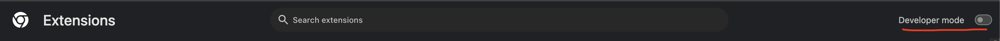

CHROME & FIREFOX
what is the structure of a web extension ?normally web extensions are composed by main files composition,
- javascript files
- HTML files
- CSS files
- manifest.json file
what is the manifest.json file ?
is a required file that lists the identification of the extension, permissions required of the extension, and the accessibility of the extension. here we can specify the context that a file will run. the three major contexts are the webpage/content script, the popup and the background. you can let the browser know which context you want the file to run in by specifying it in the manifest.json file, aptly labeled content_scripts, background_script, and browser_action in the manifest version 2 (v2).
what is the pattern of a web extension ?
browser_specific_extension_scheme://extension_id/actual_resource_name
what is the background context of a web extension ?
is the most powerful of the three contexts with the ability to access most of the browser extension APIs and WebExtensions API. those APIs give an extension a lot of control of the user’s browsing experience, with the ability to arbitrarily control tabs, read from the websites, or modify and read cookies. these abilities are each locked behind permissions, requested in the manifest.json file under the “permissions” key. however exist different permissions that can be part of the manifest.json v3 file. - permissions - optional_permissions - host_permissions - optional_host_permissions chrome for developers: permissions permissions sample for analysis
how to enable developer mode ?
1. open browser
2. go to chrome://extensions/
3. go to the right and switch the "Developer mode" toggle.
check image below

important settings for analysis:
chrome://extensions/
chrome://inspect/
how to download the .crx file from chrome extensions ? method 1
this is a quick simnple method using CLI, we are using the google service to downnload it. there's two pre-requisites,
-extension ID
-chrome version
URL="https://clients2.google.com/service/update2/crx?response=redirect&prodversion=${PRODVER}&x=id%3D${EXT_ID}%26installsource%3Dondemand%26uc"
i created a quick script on bash to download the extension you want, you need to type the extension ID and version of chrome to work with.